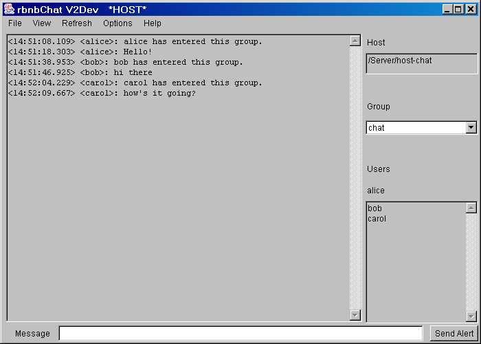
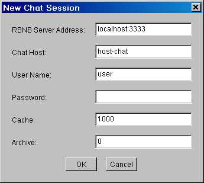
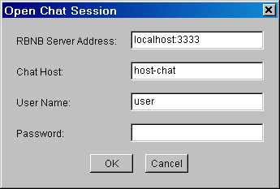
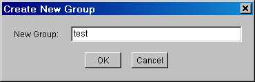
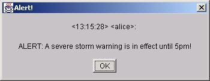

DataTurbine Chat Utility
rbnbChat
User Manual
V2.4
January, 2003
Copyright, Creare Inc.
Table of Contents
Overview
Setup and Startup
DataTurbine
Fetch All Messages
Group Name
User's Name
Prompt for Password
Menu Bar
File Menu
New
Open
Close
Exit
View Menu
Clear
Date
Time
Military
Greenwich Mean Time
Local Time
Font Size
Refresh Menu
10 seconds
1 minute
10 minutes
1 hour
10 hours
1 day
10 days
All
Options Menu
Beep On New
Log
Help Menu
About
Sidebar
Host
Groups
Users
Message Display
Message Entry
Send Alert
Introduction
Overview
The rbnbChat application lets users communicate with each other
via the DataTurbine.
rbnbChat provides a command line
for rapid establishment of a connection to the DataTurbine upon start-up.
The graphical interface shows received messages in a display screen and
allows the user to enter and send messages in a text entry field. rbnbChat
has an array of customization options available, including options to secure
a new rbnbChat session with a password, create rbnbChat groups,
review old messages, log an on-going session, send alerts, and do many other
tasks.
The following figure shows an example rbnbChat session.

>
- Example rbnbChat Session
Setup and Startup
The rbnbChatapplication needs to be run under a Java Virtual Machine
(JVM). Different flavors of Java come by different names (e.g. java, jre,
jview).
At startup, the rbnbChat program allows the user to specify on
the command line: a DataTurbine to
connect to, whether or not to fetch all available messages, a user name, and
whether or not rbnbChat should prompt the user for a password.
If the user does not specify their name at the command line, rbnbChat
will prompt the user for it at a later time.
The user may choose to start rbnbChat without any command line
arguments. The user can select the New or
the Open buttons on the File menu to establish an rbnbChat session via
the graphical interface.
Once rbnbChat is connected to the DataTurbine, the user interface screen shows the messages received
(including those sent by the user) and allows the user to enter his or her own messages.
Command Line Arguments
Use of any command-line argument causes rbnbChatto attempt to connect
to a DataTurbine and establish an rbnbChatsession upon start-up.
DataTurbine
-a [host][:port]
The address of the DataTurbine server to connect to.
The default is to set the DataTurbine to localhost:3333, but not open
the connection.
Fetch All Messages
-f
Tells rbnbChat to fetch all of the messages available in the DataTurbine
in the start-up group.
The default is not to fetch any messages from the DataTurbine when the
connection is opened.
User's Name
-u <user name>
Specifies the name the user is to be
known by. This is the datapath of the DataTurbine channel used.
There is no default user name, and as needed, the rbnbChat application
will display the Open Dialog to ask the user
for a user name.
Prompt for Password
-p
Causes rbnbChat to display the Open Dialog
at start-up, to allow the user to enter a password for the creation of a
private session.
By default, no password is applied, and rbnbChat establishes
a regular, public connection with the DataTurbine.
User Interface Fields
Menu Bar
At the top of the user interface screen
is the menu bar. The menu bar has five menus that control the connection
(File Menu), the display (View
Menu), refreshing (Refresh Menu), the settings
(Settings Menu), and provide help (Help Menu).
File Menu
The file menu has buttons to create a new chat host and open a connection
to the DataTurbine (New), open connection to a
DataTurbine (Open), to close the open connection
(Close), and to exit the program (Exit).
New
The New button on the File Menu creates a new Chat Host
server and opens a connection to the DataTurbine. The
rbnbChat program
pops up a dialog box to ask for the DataTurbine server address, the Chat
Host server name, the username, the password for both the chat host and the
client connection, the cache size in frames, and the archive size in
frames.
Entering a password creates a
private chat host.
The cache size must be greater than zero. The archive size must be
either 0 (no archive) or greater than or equal to the cache size (in which
case,
rbnbChat attempts to either append to an existing archive or
creates a new one).
The following is an example of the New dialog.

Example rbnbChat New Dialog
Open
The Open button on the File Menu opens a connection to a DataTurbine.
The rbnbChat program pops up a dialog box to ask for the DataTurbine
server address, the Chat Host server name, the username, and the password
for the Chat client connection,.
Entering a password creates a private session.
The following is an example of the Open dialog.

Example rbnbChat Open Dialog
Close
The Close button on the File Menu closes the open connection to
a DataTurbine.
Exit
The Exit button on the File Menu exits the rbnbChat program.
View Menu
The view menu has options to clear the message display, to select or deselect
displaying the server, date and time, or military time, and to choose whether
the displayed times will be in Greenwich Mean or in Local Time.
Clear
The Clear button on the View Menu clears all of the messages out
of the message display.
Date
The Date checkbox on the View Menu toggles the inclusion of the date in
the message display, with the format dd-MMM-yyyy.
(Example: 05-AUG-2001 is August 5, 2001.)
Time
The Time checkbox on the View Menu toggles the inclusion of messages'
send time in the message display, with the
format HH:mm:ss. (Example: 21:04:16 is 9:04:16 PM.)
Military
The Military checkbox on the View Menu overrides the use of either the
Date or Time options,
and displays message dates and times in the message
display with the format ddHHmmssZ MMM yy. (Example: 23153933Z
JUL 01 is July 23, 2001 at 3:39:33 PM, GMT.)
Greenwich Mean Time
The Greenwich Mean Time checkbox sets all displayed times to be in Greenwich
Mean Time.
Local Time
The Local Time checkbox sets all displayed times to be in Local Time.
Font Size
The Font Size submenu on the View Menu allows the user to change the size
of the font in which the messages are displayed in the message display.
Refresh Menu
The Refresh Menu has options to refresh the message display by performing a clear and then
fetching some or all of the messages available in the DataTurbine
for the current group.
10 seconds, 1 minute, 10 minutes, 1 hour,
10 hours, 1 day, 10 days
The 10 seconds, 1 minutes, 10 minutes, 1 hour, 10 hours, 1 day, and 10
days buttons on the Refresh Menu each clears the message display and then fetches the last 10
seconds, 1 minutes, etc. of messages available in the DataTurbine for the
current group.
All
The All button on the Refresh Menu clears the message display and then fetches all messages
available in the DataTurbine for the current group.
Options Menu
The Options menu permits the user to choose whether to beep on receipt of new messages, and whether
to log the on-going rbnbChat session.
Beep on New
The Beep on New button on the Settings Menu toggles beeping on and off.
When beeping is enabled, rbnbChat will beep upon the receipt of any
new message. Beeping is off by default. Refreshed
messages will not cause beeps.
Log
The Log button on the Settings Menu toggles logging on and off.
When logging is on, all messages written to the display are appended to
the file "Chat.log" in the current directory. Refreshed messages are not logged.
Help Menu
The Help menu has a button to show information about the rbnbChat program.
About
The About button on the Help Menu pops up a dialog box showing information
about the rbnbChat program.
Sidebar
At the right side of the user
interface screen is the sidebar. The sidebar shows the current connection
information and allows the user to select the chat group.
The current host is shown at the top of the sidebar. This is the full pathname
of the chat host to which messages are sent and from which messages are received.
The host provides the ring buffer (cache and archive) for the chat discussions.
See the New menu selection.
The current group is shown in the middle of the sidebar. The current group
is shown.
Clicking on the group pops up a list of the groups currently available in
the chat host. Selecting any of the groups will switch you from your current
group to the selected group.
At the end of the list is the <NEW> selection, which allows you to
create a new group. This pops up the new group menu. shown below. Enter the
name of a new group and select OK to switch to create and switch to the new
group.

Example rbnbChat new groups menu
The users in the current group are shown at the bottom of the sidebar.
Immediately under the Users tag is your name. You can change this name by
opening a new connection.
Below that is the list of users in the current group. This list is updated
when you switch groups,
Message Display
In the middle of the user interface screen
is the message display. As messages are received by rbnbChat, it places
them into this window. Each message is preceeded by the name of the person
sending the message and, optionally, some combination of the sender's server
name, and the date and time at which the message was sent to the DataTurbine.
Private Mode
The user may enter a password in the Open Dialog
or New Dialog when establishing a connection.
The connection is then private and rbnbChat is in private mode.
If a new chat host is created, then all discussions using that host are
private and are protected by the password provided. All users must supply
the same password to gain access to that chat host.
If a session is simply opened, then the password must match the password
of the chat host, if any, or the user will be denied access.
In private mode,rbnbChat places a red border around the message
display.
Message Entry
Under the message display on the
user interface screen is the message entry
field. The user can type his or her messages into this field. The field
scrolls if the message is too long to fit. The message is sent when the user
presses the Enter key and the message entry field is cleared.
Send Alert
A user may type a message into the entry field and then press the Send
Alert button, on the right of the entry field, to send the message as an alert.
Alerts are displayed in a pop-up alert message box, as well as in the regular
message display area, and rbnbChat will beep upon receipt of any alert message.
The following is an example of an alert message box:

Example rbnbChat alert message box